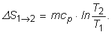
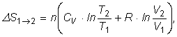
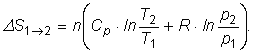
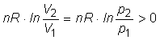

Elemente de termodinamică. |
Al doilea principiu al termodinamicii |
De ce oare nu se utilizează în practică motorul Carnot?
Răspuns: Procesele izoterme nu se pot realiza decât foarte lent, altfel, transferul prea rapid de căldură ar conduce la modificarea temperaturii substanţei de lucru. În practică, suntem interesaţi să obţinem o anumită putere de la un motor, chiar dacă randamentul nu este cel mai bun posibil. În funcţionarea motoarelor Otto şi Diesel nu sunt procese izoterme, toate transformările fiind rapide.
Ai posibilitatea să măreşti cu 1 K temperatura sursei calde a unui motor termic Carnot, sau să micşorezi cu 1 K temperatura sursei sale reci.
În care caz s−ar mări mai mult randamentul motorului termic?
Cât este eficienţa unei pompe termice care funcţionează după un ciclu Carnot inversat?
Poţi oare răcori bucătăria lăsând deschisă uşa frigiderului?
Se poate oare propulsa un vapor, extrăgând energia prin răcirea apei întâlnită în cale?
Răspuns: Dacă toată apa întâlnită este la aceeaşi temperatură, conform principiului II al termodinamicii, nu poate fi obţinut lucru mecanic. Dacă însă este utilizată diferenţa de temperatură dintre straturile de apă (mai caldă la suprafaţă şi mai rece la mare adâncime), obţinerea de lucru mecanic este posibilă!
Cât este variaţia de entropie a unui sistem care parcurge un proces ciclic?
Răspuns: Zero. Entropia este o mărime fizică de stare. După parcurgerea unui ciclu, sistemul revine la starea sa iniţială. Însă, într−un proces ciclic, entropia mediului creşte!
a. Reprezintă un ciclu Carnot în coordonate temperatură−entropie (T−S).
b. Care este semnificaţia grafică, pe diagrama T−S, a căldurii primite? Dar a celei cedate?
c. Ce reprezintă aria delimitată de ciclu pe diagrama T−S?
Răspuns parţial: c. Energia schimbată cu mediul sub formă de căldură.
Poţi calcula astfel variaţia de entropie într−un proces reversibil la presiune constantă, în care se modifică temperatura sistmului:

Cât este variaţia de entropie când amesteci un litru de apă rece la 10°C cu un litru de apă fierbinte la 70°C?
Răspuns: 33,6 kJ. Entropia sistemului creşte.
Poţi calcula variaţia de entropie a unui gaz ideal într−un proces reversibil, astfel:

sau, echivalent:

Cât este variaţia de entropie a unei cantităţi de gaz ideal care:
a. se destinde izoterm?
b. este comprimat izoterm?
c. se destinde adiabatic?
d. este comprimat adiabatic?
e. se destinde izobar?
f. este comprimat izobar?
g. este încălzit izocor?
h. este răcit izocor?
Răspuns parţial: a. . Entropia gazului creşte.